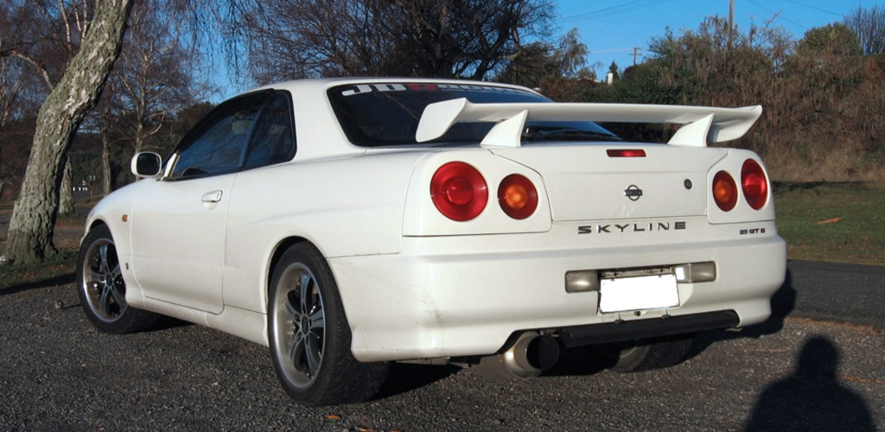

Nissan skyline R34 - W maju 1998 roku model HR/ER/ENR34 przeszedł ogromną liczbę zmian w porównaniu do dwóch poprzednich modeli R32 i R33, pogłębiono w nim sportowy charakter, silnik RB25DET NEO stał się bardziej ekonomiczny, poprzez to bardziej przyjazny środowisku. Produkcja R34 z oznaczeniem GT z silnikiem RB20E została przerwana, w zamian za ten silnik został wprowadzony do produkcji ulepszony silnik RB20DE z modelu R32, dostał on również do oznaczenia NEO. Skyline’a R34 napędzał silnik RB20DE NEO, połączony z 5-biegową skrzynią biegów, 6-cylindrowy rzędowy silnik stał się najbardziej ekonomiczny spośród wszystkich R6 w Skyline'ach. 5-biegowa automatyczna skrzynia biegów dostępna była w niektórych modelach, w poprzednich modelach była niedostępna. Nissan produkował 4-biegową automatyczną przekładnię tiptronic, dla wszystkich automatycznych wersji.